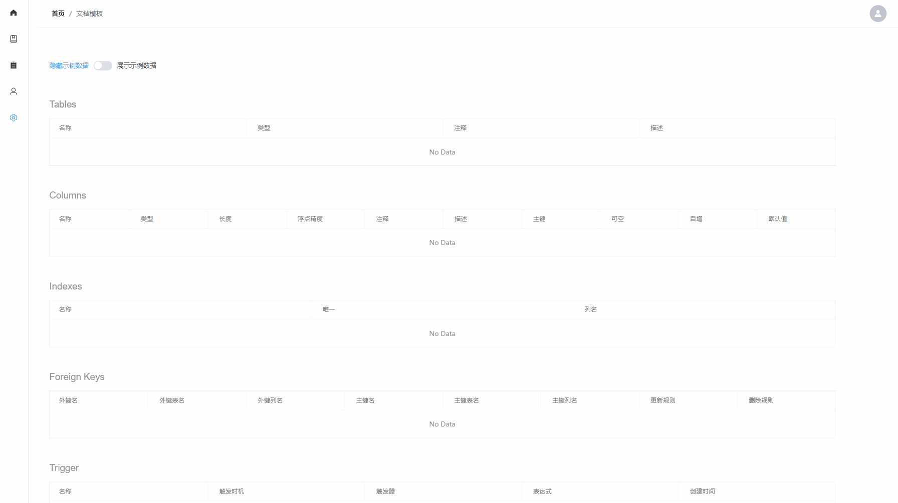

引言
谢邀，人在飞机，刚下海上。
《简约至上：交互式设计四策略》是最近读的一本指导产品设计的书，它对我的产品设计方法带来了很大的改变。
书中不仅有设计思维方面的内容，还有执行层面的方法论，让我一个完全依靠直觉和过往经验做功能设计的设计者初次感觉到设计也是有迹可循。
本文算是一篇读后感 + 笔记的混合文，大纲如下
- 功能和可用性到底哪一个更受用户关注？
- 三类用户：主流、随意型、专家
- 为自己设计还是为用户设计？
- 四策略：删除、组织、隐藏、转移
功能和可用性到底哪一个更受用户关注？
书中展示了一个 2006 的实验，该实验将用户分为两组去挑选功能数量不同的播放器
- 第一组（未试用组）：只能通过观察产品来做挑选
- 第二组（试用组）：可以试用产品以后再做挑选
播放器的规格如下
- 播放器 A：拥有 7 项功能
- 播放器 B：拥有 21 项功能
最终实验结果如下
| 选择播放器 A 的用户比例（7 项功能） | 选择播放器 B 的用户比例（21 项功能） | |
|---|---|---|
| 未使用组 | 34% | 66% |
| 试用组 | 56% | 44% |
由结果可以看出对于没有机会试用的消费者而言，功能越多越能吸引用户注意；但是消费者使用了产品之后，他们的偏好就会从重视功能转为重视可用性了。
复杂的产品通常很吸引人，这是因为人们喜欢自己被包围在不必要的功能中。
当然这并不是说功能不重要，而是不要以功能的多寡来衡量产品的价值，这里引用一段原文作者的观点：
增加的功能越多，就越难发现真正对用户有价值的新功能。这样盲目添加的新功能早晚会成为垃圾功能。增加复杂性意味着遗留代码越来越沉重，导致产品维护成本越来越高，而且也越来越难以灵活应对市场变化。
复杂的功能会导致另一个问题：过多的功能选择会带给用户负担。
给用户提供选择会让人感觉自己在把控局面，但实际上主流用户更希望少一些选择，尤其是多种选择都很相似的情况下，选择就是一种负担。
简单的用户体验不会强迫用户去做这种选择，哪种方式最有效应该是设计者考虑的事情。
所以作为产品设计者，应该将关注点放在产品能否满足用户最高优先级的目标上。
这不禁让我想起了前段时间开源的据库文档管理平台 Databasir ，该平台有一个模板定制功能，用户可以将表头定义成自己想要的任意名字，如下图所示：

这个功能花费了我大量的时间做设计、研发，但它确实成为了一个实打实的垃圾功能：用户才懒得来定制呢！
主流用户关心的始终都是能看懂文档，而不是去学习如何定制文档好满足自己的偏好。
那么针对这个功能， Databasir 的主流用户实际要的是什么功能呢？其实是国际化。
对于一款开源产品来说，用户可能来自各个国家，在他们打开软件的时候，软件如果是以它系统的默认语言展示那就是最好的。
用户会期望更多的功能，通常是因为用户知道自己面临了什么问题，但却不一定知道最合适的解决方案，正如乔布斯先生所言
用户并不知道自己需要什么，直到我们拿出自己的产品，他们就发现，这是我要的东西……
三类用户：主流、随意型、专家
一般在做产品之前我们都会定位产品面向的客户群，比如
- 软件编辑器的目标用户就是软件研发人员
- ERP 软件的目标用户就是企业中的财务人员
- 运动品类垂直电商面向的就是喜欢运动或有健身倾向的用户
- …
在《简约至上：交互式设计四策略》作者又以用户对产品的态度将目标用户再次进行分类，主要有 3 种
- 主流用户
- 随意型用户
- 专家用户
主流用户一般都是最大的用户群体，他们选择产品的时候不是因为产品所使用到的技术，而是你的产品能够完成某项任务（他们最感兴趣的就是立即把工作完成），他们会掌握产品核心功能的使用方法，但不会产生学习所有功能的想法。
以手机为例，这类用户的需求就是：能快速地打电话和方便地上网。
专家用户一般是具有探索欲的用户群体，他们会提出建议，希望能看到为他们量身定做的前所未有的技术，这类用户和主流用户的需求有着非常的区别
- 主流用户追求易操控，专家用户在乎操控的精确度
- 主流用户想要靠谱的结果，专家用户希望得到完美的结果
- 主流用户害怕出现错误，专家用户则有拆解一切的冲动
- 主流用户想看到示例和故事，专家用户想看到的则是原理
最后就是随意型的用户了，他们介于主流用户和专家用户之间，一般是有使用过同类产品的用户，也有兴趣使用更高级、复杂的产品，但却不愿意接触全新的东西。
简单来说就是愿意接受新的功能，但新的功能要足够简单，他们才接受。
除了用户分类以外，作者谈到了一个用户的属性：用户所属分类基本是不变的，也就是说不会在一段时间以后主流用户就会升级到专家用户。
即使是用户对一个产品使用了很多年，用户类型的标签也几乎很少发生变化，而成功的产品设计应该是面向主流用户的。
这方面在我做开源时也犯过同样的错，我在思考 Databasir 的功能时就站在了专业用户的角度（可能因为我就是属于专业用户？）。
为了可以灵活扩展数据库，我设计了一个功能：用户只要按照下面的表单填写完数据就能让 Databasir 支持他所使用的的数据库。

刚完成这项功能的时候，我还自鸣得意了好一阵。
可后来我发现这功能大部分用户都用不了：学习成本太高了，我的用户也有很多非 Java 技术人员，看见 JDBC 这个专业词更是一脸懵逼……
最后我选择了由我来替用户填写表单，用户只需要选择内置的模板即可
这个模板由社区驱动，可以不断地添加进去，这就相当于将专业用户的知识传递给了主流用户，减轻了主流用户的负担。
为自己设计还是为用户设计？
美国作者马克·吐温有一句名言
如果你身上唯一的工具是一把锤子，那么你会把所有的问题都看成钉子
一个产品的设计背后通常会有多个角色参与，比如研发、设计、产品经理等，不同的角色属性导致了看待问题时的倾向性也有很大的不同。
设计人员习惯于注意用户测试中的失败案例、开发人员习惯于想象各种系统出错的情景、产品经理则希望能为用户提供交互式工具去处理各种问题。
客观来说每个角色看待问题的角度都是对的，但这种过度的倾向性实际就是把所有问题当做一类问题来处理（都是钉子），最后得到的结果要么并不是用户想要的，要么就是 100% 的努力得到了 1% 的收益。
不妨想一下：用户真的需要这个解决方案吗？还是你的锤子决定了你要这个解决方案？
四策略：删除、组织、隐藏、转移
最后就是策略篇，作者提出了 4 做出简化设计的方法
- 删除
- 组织
- 隐藏
- 转移
删除
删除很好理解，就是删除不必要的功能。但我们经常会觉得删除不完整的功能或内容会导致已经付出的时间和努力被浪费掉了，这种现象被称之为”沉没成本误区“，这部分功能的成本其实是不可能收回来的，它也许还在发挥作用，但维护它的支出也并没有减少。
在讨论删除功能时，我们经常会提出：“假如用户想….”。
这多数其实只是在刺激我们的求全心理，担心自己漏掉了什么需求，这份担忧之下就是时间、精力和金钱的成本。
组织
组织其实就是一种分类，按照一定的规则将相似的功能聚合在一块。
分块越少，对于用户来说理解的负担也就越小。在做组织的时候一般需要强调一到两个最重要的主题，分块数量最好在 7 ± 2 的范围内（因为这是人脑瞬间能记住的最大数目）。
人类一般是按照某种惯性在做事，即某种特定的步骤，打乱这个步骤就会造成迷惑，所以在做组织时，一定要去理解用户的行为：他们想做什么，先做什么，后做什么。然后再尽力让流程与各个步骤的顺序吻合。
隐藏
隐藏代表在用户和功能之间设置了一道障碍，所以我们必须谨慎的做出隐藏的决策。
通常那些主流用户很少使用，但可能是专业用户需要的功能就非常适合隐藏
- 细节：比如邮件的个性签名
- 偏好设置：比如修改单位、时区等
优雅的隐藏会在用户需要时自动出现，比如在 Chrome 浏览器中如果我们选中一段单词，这时候就会弹出一个翻译的图标，我只要点击该图标它就能将单词翻译为中文。

现在我在思考一个功能要如何隐藏时都会想起书中的一句话：保证用户在前进的过程中能够遇到提示。但，不要挡住他们的去路。
转移
转移很好理解，就是把正确的功能放到正确的平台或者正确的系统组件中去。
以遥控器为例，老电视的遥控器拥有很多的按钮
而最近的智能电视则就简洁不少，以小米为例
这并不是说小米的遥控器就会缺少很多功能，它只是将功能都转移到了电视屏幕上的菜单上了，
总结
任何应用程序都会有一些无法消除的复杂性。关键的问题在于：谁会面对这些复杂性？
泰斯勒有一个很著名的理论叫复杂度守恒定律（也叫泰斯勒定律）
无论在产品开发环节还是在用户与产品的交互环节，其内在的复杂度都有一个临界值，到达临界值后就不能再简化了，你唯一能做的就是将固有的复杂性从一个地方移动到另外一个地方
产品设计者很多时候都得做出将用户面临的复杂性转移到产品内部这样的决策。